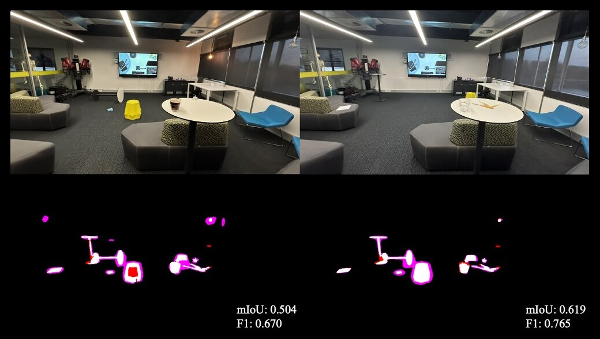
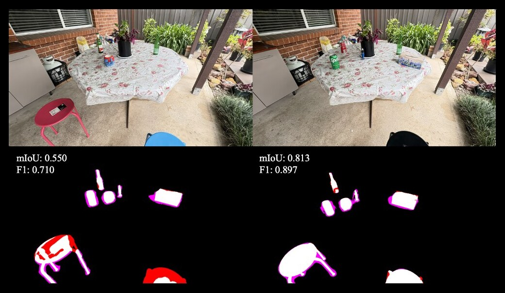
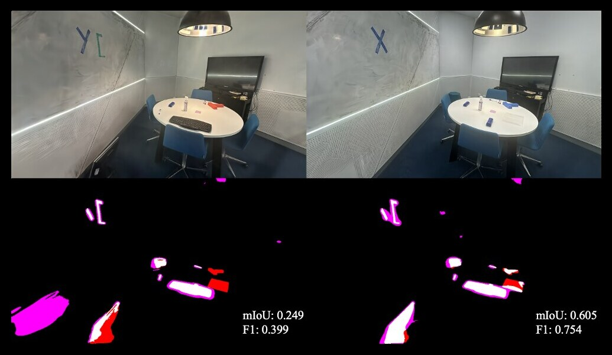
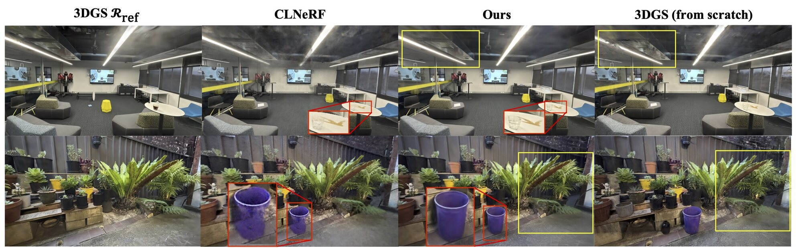

Changes in Real Time: Online Scene Change Detection with Multi-View Fusion
TL;DRDetect what has changed in a mapped scene while you walk through it: no labels, no known poses, multi-view consistent, over 10 FPS, and more accurate than the best offline methods.
Online, pose-agnostic and label-free
Online Scene Change Detection (SCD) is an extremely challenging problem that requires an agent to detect relevant changes on the fly while observing the scene from unconstrained viewpoints. Existing online SCD methods are significantly less accurate than offline approaches. We present the first online SCD approach that is pose-agnostic, label-free, and ensures multi-view consistency, while operating at over 10 FPS and achieving new state-of-the-art performance, surpassing even the best offline approaches.
Our method introduces a new self-supervised fusion loss to infer scene changes from multiple cues and observations, PnP-based fast pose estimation against the reference scene, and a fast change-guided representation update strategy for the 3D Gaussian Splatting. Extensive experiments on complex real-world datasets demonstrate that our approach outperforms both online and offline baselines.
Online, and more accurate than offline
Overview

Comparison with MV3DCD



State of the art, online and offline
Scene change detection on PASLCD, averaged over all 20 instances. LF: label-free, PA: pose-agnostic, MV: multi-view consistent. Best in bold, second underlined.
| Method | LF | PA | MV | mIoU ↑ | F1 ↑ | Time ↓ |
|---|---|---|---|---|---|---|
| R-SCD | – | – | – | 0.118 | 0.199 | 194 s |
| CYWS2D | – | – | – | 0.273 | 0.398 | 189 s |
| GeSCD | ✓ | – | – | 0.477 | 0.611 | 298 s |
| ZeroSCD | ✓ | – | – | 0.306 | 0.414 | 409 s |
| 3DGS-CD | ✓ | ✓ | ✓ | 0.209 | 0.339 | 824 s |
| MV3DCD | ✓ | ✓ | ✓ | 0.478 | 0.628 | 479 s |
| O-SCD (ours) | ✓ | ✓ | ✓ | 0.552 | 0.694 | 156 s |
| Method | LF | PA | MV | mIoU ↑ | F1 ↑ | FPS ↑ |
|---|---|---|---|---|---|---|
| ChangeSim | – | – | – | 0.018 | 0.034 | 11.5 |
| CS+CYWS2D | – | – | – | 0.243 | 0.360 | 8.2 |
| CS+GeSCD | ✓ | – | – | 0.181 | 0.270 | <1 |
| OmniPoseAD | ✓ | ✓ | – | 0.168 | 0.262 | <1 |
| SplatPose | ✓ | ✓ | – | 0.173 | 0.281 | <1 |
| SplatPose+ | ✓ | ✓ | – | 0.237 | 0.358 | <1 |
| O-SCD (ours) | ✓ | ✓ | ✓ | 0.486 | 0.638 | 11.2 |
Change-guided, efficient Gaussian update

| Method | PASLCD | CL-Splats | ||||||
|---|---|---|---|---|---|---|---|---|
| PSNR ↑ | SSIM ↑ | LPIPS ↓ | Time (s) ↓ | PSNR ↑ | SSIM ↑ | LPIPS ↓ | Time (s) ↓ | |
| 3DGS | 22.21 | 0.7558 | 0.2426 | 550 | 30.31 | 0.9319 | 0.1178 | 364 |
| 3DGS-LM | 22.26 | 0.7562 | 0.2422 | 340 | 29.95 | 0.9322 | 0.1177 | 275 |
| SpeedySplats | 22.25 | 0.7603 | 0.2618 | 399 | 29.89 | 0.9349 | 0.1290 | 312 |
| CLNeRF | 22.27 | 0.6239 | 0.3907 | 451 | 26.29 | 0.7867 | 0.2235 | 301 |
| O-SCD (ours) | 23.70 | 0.7868 | 0.2491 | 42 | 30.54 | 0.9356 | 0.1256 | 39 |
O-SCD matches or exceeds the reconstruction quality of methods that re-optimize the changed scene from scratch, while delivering the updated representation in under a minute, up to 8–9× faster.
Related work
BibTeX
@inproceedings{galappaththige2026online,
title = {Changes in Real Time: Online Scene Change Detection with Multi-View Fusion},
author = {Galappaththige, Chamuditha Jayanga and Lai, Jason and Windrim, Lloyd and Dansereau, Donald and Suenderhauf, Niko and Miller, Dimity},
booktitle = {Proceedings of the IEEE/CVF Conference on Computer Vision and Pattern Recognition (CVPR)},
pages = {32246--32256},
year = {2026}
}
If you use PASLCD, please also cite MV3DCD.
This work was supported by the ARC Research Hub in Intelligent Robotic Systems for Real-Time Asset Management (ARIAM, IH210100030) and Abyss Solutions. C.J., N.S. and D.M. also acknowledge ongoing support from the QUT Centre for Robotics.